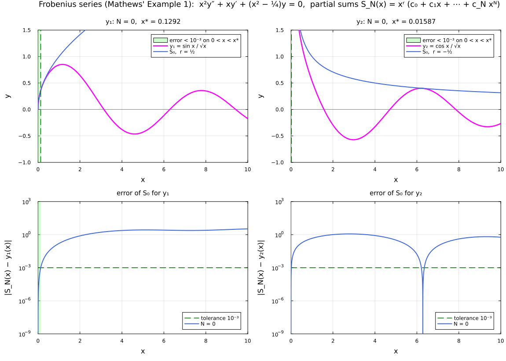

Frobenius Series Solution
Source inspiration: (Mathew 2000-2019).
Description
A second-order linear differential equation \(P(x)\,y'' + Q(x)\,y' + R(x)\,y = 0\) with polynomial or analytic coefficients has power-series solutions \(\sum c_n (x - x_0)^n\) about any point \(x_0\) where \(P(x_0) \ne 0\). At a point such as \(x = 0\) where \(P(0) = 0\), the coefficients of the normalised equation \(y'' + (Q/P)\,y' + (R/P)\,y = 0\) blow up, and a solution may behave like \(x^{1/2}\), \(x^{-1}\) or \(\ln x\) there, which no power series can reproduce. The method of Frobenius handles the mildest such point, a regular singular point, by multiplying the power series by a power of \(x\) that is not fixed in advance:
\[ y(x) = x^{r} \sum_{n=0}^{\infty} c_n x^{n} = \sum_{n=0}^{\infty} c_n x^{n+r}, \qquad c_0 \ne 0. \]
Substituting this series into the equation and setting the coefficient of the lowest power of \(x\) to zero gives the indicial equation \(r(r-1) + p_0 r + q_0 = 0\) (with \(p_0\) and \(q_0\) read off the equation, as defined below), whose roots are the admissible exponents \(r\). Setting the coefficient of every higher power to zero gives a recurrence that produces \(c_1, c_2, \ldots\) from \(c_0\). Each root of the indicial equation can give one solution; whether the second root gives a second solution depends on how the two roots differ. Examples 2 and 3 show the usual case of two Frobenius solutions, and Examples 1, 4 and 5 the special cases of roots that are equal or differ by an integer.
Mathews works five equations: three that have elementary or Bessel-function solutions, and Bessel’s equations of order \(0\) and \(1\), whose Frobenius series define \(J_0(x)\) and (up to a factor \(2\)) \(J_1(x)\). He then uses the series to prove \(J_0'(x) = -J_1(x)\) and applies \(J_0\) to the radial vibrations of a circular drum, where the zeros of \(J_0\) fix the drum’s frequencies and the circles that stay at rest. Every coefficient, closed form, zero and radius below has been recomputed: the series by solving the equations power by power in exact rational arithmetic, and the numbers in 30- or 40-digit arithmetic.
Animations
The first animation shows partial sums of a Frobenius series closing in on the solution they define, two more powers of \(x\) (one more nonzero term) per frame. Its top row plots the partial sums against the closed form, and its bottom row the error on a logarithmic scale, with green shading over \(0 < x < x^*\), the interval where the error stays below \(10^{-3}\) (the \(x^*\) of the tables below). The other two animate the vibrating drum. The second sweeps the separation constant \(\lambda\) and shows why only the zeros of \(J_0\) give a drum whose rim stays still. The third shows the first three normal modes vibrating, as surfaces over the drum and as cross-sections through its centre. As in Mathews’ graphs of the drum, pink marks displacement above the rest position and cyan below it.
Mathews’ module links no animation, and his animation archive has none for this module, so all three animations are new, with no Mathews original. (The archive’s Maclaurin- and Taylor-series animations of Bessel functions belong to his Taylor polynomial module.) Case 1 animates Example 1. The partial sums of Examples 2 to 5 are not animated: each would look like Case 1, and their tables give the same information. Example 6 is an identity with no graph. Example 7’s static plots of \(J_0\) on \([-15, 15]\) and of \(Y_0\) are not animated, but Case 2 shows \(J_0\) in Mathews’ Example 8 window. Mathews’ disk diagrams of Example 10 are replaced by the nodal circles drawn on the surfaces of Case 3. The scripts find the zeros \(\lambda_n\) as Mathews does, with a root finder started at \(n\pi\) (here Newton’s method, in 256-bit arithmetic).
Julia source scripts that generated these animations are linked under each case.
Case 1 — Both Frobenius solutions of Example 1, \(r = \pm\tfrac12\), partial sums through \(x^N\) for \(N = 0, 2, \ldots, 20\), on \(0 < x \le 10\)
Behavior: The factor \(x^r\) is part of every partial sum \(S_N(x) = x^r \sum_{n=0}^{N} c_n x^n\). So the partial sums of \(y_2 = \cos x/\sqrt{x}\) grow without bound like \(x^{-1/2}\) as \(x \to 0^+\), just as \(y_2\) does, and their error still tends to \(0\) there. A partial sum fails far from \(0\), not near it. The interval where the error stays below \(10^{-3}\) widens with every new partial sum, from \(x^* = 0.1292\) at \(N = 0\) to \(x^* = 7.319\) at \(N = 20\) for \(y_1\), and from \(0.01587\) to \(6.939\) for \(y_2\). From \(N = 8\) on, each further nonzero term (two more powers of \(x\)) moves \(x^*\) about \(0.76\) farther out. For every \(N\), \(x^*\) is smaller for \(y_2\) than for \(y_1\). The values for \(N = 4, 8, \ldots, 20\) are those in the table of Example 1. On \(0.1 \le x \le 10\), \(S_N\) lies above the solution for \(N = 0, 4, 8, \ldots, 20\) and below it for \(N = 2, 6, \ldots, 18\). The only error curve that falls back below \(10^{-3}\) beyond its \(x^*\) is that of \(S_0\) for \(y_2\). There \(S_0 = x^{-1/2}\) touches \(y_2\) at \(x = 2\pi\), where \(\cos x = 1\), and the error is below \(10^{-3}\) again for \(6.213 < x < 6.354\). Mathews’ graphs of this example are lost, so the window is chosen here.

Case 2 — The rim condition \(J_0(\lambda) = 0\) (Examples 8 and 9), \(\lambda\) from \(0\) to \(\lambda_5\)
Behavior: The drum’s radial profile is \(R(r) = J_0(\lambda r)\) on \(0 \le r \le 1\). This is the stretch \(0 \le x \le \lambda\) of the graph of \(J_0\) (blue, left) squeezed into the drum’s radius (right, a cross-section through the centre). The rim value is \(J_0(\lambda)\), the red dot. At \(\lambda = 0\) the profile is flat at height \(1\). As \(\lambda\) grows in steps of \(0.2\), the rim value is zero only when \(\lambda\) is one of the zeros \(\lambda_1 = 2.405\), \(\lambda_2 = 5.520\), \(\lambda_3 = 8.654\), \(\lambda_4 = 11.79\) and \(\lambda_5 = 14.93\) of Example 8, and the animation pauses at each of them. Only these values give a drum fixed at its rim, and the profile at each pause is the mode shape \(J_0(\lambda_n x)\) of Example 9. Every time \(\lambda\) passes a zero, the rim value changes sign, because the zeros are simple (\(J_0'(\lambda_n) = -J_1(\lambda_n) \ne 0\)), and a new node enters at the rim. The nodes \(r = \lambda_k/\lambda\) then move inward as \(\lambda\) grows. So mode \(n\) has \(n - 1\) nodal circles, at the radii in the table of the vibrating-drum section below, which the titles give to four figures. Between \(\lambda_1\) and \(\lambda_2\) the rim value has its minimum \(J_0(3.8317) = -0.40276\). The sweep comes closest at \(\lambda = 3.8\), whose frame shows \(-0.4026\). The window on the left is Mathews’ Example 8 window \([0, 5\pi] \times [-0.5, 1]\), and on the right the window \([-1, 1] \times [-0.45, 1]\) of his Example 10 cross-sections. Both tops are raised to \(1.05\) so that the value \(J_0(0) = 1\) is not drawn on the frame edge.

Case 3 — The normal modes \(u_n(t, r) = J_0(\lambda_n r)\cos(\lambda_n t)\) for \(n = 1, 2, 3\) (Example 10), one period each
Behavior: Each mode is a standing wave. The fixed shape \(J_0(\lambda_n r)\) is scaled by \(\cos(\lambda_n t)\), so the drum head is flat at a quarter and at three quarters of a period, and upside down at half a period, when its centre is at \(-1\). The rim and the nodal circles never move. Mode 1 has no nodal circle, mode 2 has one at \(r = 0.4357\), and mode 3 has two, at \(r = 0.2779\) and \(0.6379\). Neighbouring regions between them move in opposite directions: when pink rises, cyan falls, and vice versa. The three columns share the phase \(\lambda_n t\), not the time. Each runs through its own period, \(2.613\), \(1.138\) and \(0.7261\), in 24 frames, so in real time mode 2 vibrates \(2.2954\) and mode 3 \(3.5985\) times as fast as mode 1. Unlike a string’s overtones, these are not whole-number multiples. Mathews’ box for these surfaces, \([-1, 1]^2 \times [-0.45, 1]\) with height ratio \(0.3\), holds only the initial shapes. Over a period the centre reaches \(-1\), so the box here runs from \(-1.05\) to \(1.05\) in height and is drawn with the plotting library’s default proportions. The lines for the rim and the nodal circles are drawn over the surface, so their far halves stay visible even where the surface would hide them. The surface is drawn on a \(201 \times 201\) grid with the points outside the disk left out, which makes its edge slightly ragged.

Background
Write the equation as
\[ P(x)\,y''(x) + Q(x)\,y'(x) + R(x)\,y(x) = 0, \tag{1} \]
divide by \(P(x)\), and set \(f_1(x) = Q(x)/P(x)\) and \(f_2(x) = R(x)/P(x)\), so that
\[ y''(x) + f_1(x)\,y'(x) + f_2(x)\,y(x) = 0. \tag{2} \]
The functions \(f_1(x)\) and \(f_2(x)\) are analytic at \(x_0\) if they have Taylor series expansions about \(x_0\) with radii of convergence \(\rho_1 > 0\) and \(\rho_2 > 0\):
\[ f_1(x) = \sum_{n=0}^{\infty} a_n (x - x_0)^n \quad \text{for } |x - x_0| < \rho_1, \qquad f_2(x) = \sum_{n=0}^{\infty} b_n (x - x_0)^n \quad \text{for } |x - x_0| < \rho_2. \]
If \(f_1 = Q/P\) and \(f_2 = R/P\) are both analytic at \(x_0\), then \(x_0\) is an ordinary point of (1). Otherwise \(x_0\) is a singular point of (1).
Let \(x_0\) be a singular point of (1). If \((x - x_0)\,Q(x)/P(x)\) and \((x - x_0)^2\,R(x)/P(x)\) are analytic at \(x_0\), with expansions
\[ (x - x_0)\frac{Q(x)}{P(x)} = \sum_{n=0}^{\infty} p_n (x - x_0)^n \quad \text{for } |x - x_0| < \rho_1, \qquad (x - x_0)^2\frac{R(x)}{P(x)} = \sum_{n=0}^{\infty} q_n (x - x_0)^n \quad \text{for } |x - x_0| < \rho_2, \]
then \(x_0\) is a regular singular point of (1). In words: \(f_1\) has at worst a simple pole at \(x_0\) and \(f_2\) at worst a double pole.
All of Mathews’ examples have their singular point at \(x_0 = 0\), and from here on \(x_0 = 0\) and \(x > 0\).
The Method of Frobenius
The method is named for the German mathematician Ferdinand Georg Frobenius (1849–1917). At a regular singular point \(x_0 = 0\) of (1), look for a solution in the form of a Frobenius series
\[ y(x) = \sum_{n=0}^{\infty} c_n x^{n+r}, \qquad c_0 \ne 0, \tag{3} \]
where the exponent \(r\) may be negative or fractional. When the series is substituted into the equation, \(r\) must make the coefficient of the lowest power of \(x\) vanish; the remaining coefficients then give a recurrence for \(c_n\).
The exponent \(r\) in (3) is a root of the indicial equation
\[ F(r) = r(r - 1) + p_0\, r + q_0 = 0, \qquad p_0 = \lim_{x \to 0} x\,\frac{Q(x)}{P(x)}, \quad q_0 = \lim_{x \to 0} x^2\,\frac{R(x)}{P(x)}. \tag{4} \]
Its roots \(r_1\) and \(r_2\) are the exponents of the singular point.
Derivation. Multiply (2) by \(x^2\) and write it as
\[ x^2 y'' + x\,\bigl(x f_1(x)\bigr)\, y' + \bigl(x^2 f_2(x)\bigr)\, y = 0, \qquad x f_1(x) = \sum_{k=0}^{\infty} p_k x^k, \quad x^2 f_2(x) = \sum_{k=0}^{\infty} q_k x^k. \]
With \(y = \sum c_n x^{n+r}\) we have \(x^2 y'' = \sum (n+r)(n+r-1)\,c_n x^{n+r}\) and \(x y' = \sum (n+r)\,c_n x^{n+r}\). Multiplying the series together (Cauchy products) and collecting the coefficient of \(x^{n+r}\) gives, for \(n = 0, 1, 2, \ldots\),
\[ (n+r)(n+r-1)\,c_n + \sum_{k=0}^{n} c_k \bigl[(r+k)\,p_{n-k} + q_{n-k}\bigr] = 0. \]
For \(n = 0\) this is \(c_0\,[r(r-1) + p_0 r + q_0] = 0\), and since \(c_0 \ne 0\) it is the indicial equation (4). For \(n \ge 1\), splitting off the term \(k = n\) gives the general recursive formula
\[ F(r + n)\, c_n = -\sum_{k=0}^{n-1} c_k \bigl[(r+k)\,p_{n-k} + q_{n-k}\bigr], \qquad n = 1, 2, 3, \ldots \tag{5} \]
Formula (5) works for any equation, but in practice the series for \(x f_1\) and \(x^2 f_2\) are short (in every example below they are polynomials with one or two terms), and substituting (3) directly gives a recurrence of only two terms. That is what the examples do. Both routes were checked against each other: formula (5) and the direct recurrence give the same coefficients through \(c_8\) for the first solution of every example and for the second solutions of Examples 2 and 3. (For \(r = -\tfrac12\) in Example 1, formula (5) would divide by \(F(\tfrac12) = 0\) at \(n = 1\); that case is treated directly.)
Let \(x_0 = 0\) be a regular singular point of (1), let the series for \(x f_1(x)\) and \(x^2 f_2(x)\) converge for \(|x| < \rho\), and let the roots of the indicial equation be real, with \(r_1 \ge r_2\). Then:
- There is a Frobenius series solution \(y_1 = x^{r_1} \sum c_n x^n\) with \(c_0 = 1\), and the series converges at least for \(0 < x < \rho\).
- If \(r_1 - r_2\) is not an integer, there is a second, independent Frobenius series solution \(y_2 = x^{r_2} \sum d_n x^n\), also convergent for \(0 < x < \rho\).
- If \(r_1 = r_2\), the second solution always contains a term \(y_1(x) \ln x\), so it is not a Frobenius series (Example 4).
- If \(r_1 - r_2\) is a positive integer \(N\), the recurrence for \(r_2\) breaks down at \(n = N\), where \(F(r_2 + N) = F(r_1) = 0\). If the right-hand side of (5) is not zero there, the second solution contains a \(y_1(x) \ln x\) term (Example 5); if it is zero, \(c_N\) is arbitrary and \(r_2\) gives a second Frobenius solution after all (Example 1).
Mathews’ module warns that “there are some instances when only one Frobenius solution can be constructed.” His linked proof page goes further and says that when the roots differ by an integer, only one Frobenius series solution can be found. The second half of that statement is too strong: in Example 1 the roots \(\pm\tfrac12\) differ by \(1\), and both give Frobenius solutions.
All five equations below have polynomial coefficients with no other singular point, so \(\rho = \infty\) and every series converges for all \(x > 0\). This can also be read off each recurrence: the ratio \(|c_n / c_{n-2}|\) (or \(|c_n / c_{n-1}|\) in Example 2) tends to \(0\) as \(n \to \infty\), so the ratio test gives convergence for every \(x\). Convergence for every \(x\) does not mean a short partial sum is accurate for every \(x\), so each example ends with a table of how far the partial sums
\[ S_N(x) = x^{r} \sum_{n=0}^{N} c_n x^n \]
stay within \(10^{-3}\) of the exact solution: the table gives \(x^*\), the first \(x > 0\) at which \(|S_N(x) - y(x)|\) reaches \(10^{-3}\), so that the error is below \(10^{-3}\) on \(0 < x < x^*\). Each \(x^*\) was located by a scan with step \(0.001\) followed by bisection, confirmed by a second root finder, and checked by a separate double-precision scan with step \(0.0001\) that found the largest error on \((0, x^*)\) below \(10^{-3}\) in every case. Mathews plots partial sums against the exact solutions in Examples 1 to 5, but none of the images on those examples’ solution pages survives in the archive, so the number of terms and the plot windows he used are not known.
Example 1 — \(x^2 y'' + x y' + \left(x^2 - \tfrac14\right) y = 0\)
Step 1 (classify \(x = 0\)): \(P(x) = x^2\) vanishes at \(0\), so \(0\) is a singular point. Since
\[ x\,\frac{Q(x)}{P(x)} = 1, \qquad x^2\,\frac{R(x)}{P(x)} = x^2 - \tfrac14 \]
are polynomials, \(x = 0\) is a regular singular point, with \(p_0 = 1\) and \(q_0 = -\tfrac14\).
Step 2 (indicial equation): by (4),
\[ r(r - 1) + r - \tfrac14 = r^2 - \tfrac14 = 0, \qquad r_1 = \tfrac12, \quad r_2 = -\tfrac12. \]
The roots differ by the integer \(1\).
Step 3 (recurrence): substituting \(y = \sum c_n x^{n+r}\),
\[ \sum_{n=0}^{\infty} \left[(n+r)^2 - \tfrac14\right] c_n x^{n+r} + \sum_{n=0}^{\infty} c_n x^{n+r+2} = 0, \]
so the coefficient of \(x^{1+r}\) gives \(\left[(1+r)^2 - \tfrac14\right] c_1 = 0\), and the coefficient of \(x^{n+r}\) for \(n \ge 2\) gives
\[ \left[(n+r)^2 - \tfrac14\right] c_n = -c_{n-2}. \tag{6} \]
Step 4 (first solution, \(r = \tfrac12\)): (6) becomes \(n(n+1)\,c_n = -c_{n-2}\), and \(2c_1 = 0\) forces \(c_1 = 0\), so every odd coefficient is \(0\). With \(c_0 = 1\),
\[ c_2 = -\tfrac16, \quad c_4 = \tfrac{1}{120}, \quad c_6 = -\tfrac{1}{5040}, \quad c_8 = \tfrac{1}{362880}, \quad c_{10} = -\tfrac{1}{39916800}, \qquad c_{2k} = \frac{(-1)^k}{(2k+1)!}, \]
\[ y_1(x) = x^{1/2}\left(1 - \frac{x^2}{3!} + \frac{x^4}{5!} - \frac{x^6}{7!} + \cdots\right) = \frac{\sin x}{\sqrt{x}}. \]
Step 5 (second solution, \(r = -\tfrac12\)): (6) becomes \(n(n-1)\,c_n = -c_{n-2}\). For \(n = 1\) the equation for \(c_1\) reads \(0 \cdot c_1 = 0\), so \(c_1\) is arbitrary: this is case 4 of the theorem with a zero right-hand side. The terms that \(c_1\) generates are \(c_1 x^{-1/2}\left(x - \tfrac{x^3}{6} + \tfrac{x^5}{120} - \cdots\right) = c_1\, y_1(x)\), a multiple of the first solution, so Mathews sets \(c_1 = 0\). Then
\[ c_2 = -\tfrac12, \quad c_4 = \tfrac{1}{24}, \quad c_6 = -\tfrac{1}{720}, \quad c_8 = \tfrac{1}{40320}, \quad c_{10} = -\tfrac{1}{3628800}, \qquad c_{2k} = \frac{(-1)^k}{(2k)!}, \]
\[ y_2(x) = x^{-1/2}\left(1 - \frac{x^2}{2!} + \frac{x^4}{4!} - \frac{x^6}{6!} + \cdots\right) = \frac{\cos x}{\sqrt{x}}. \]
Result. For \(x > 0\),
\[ \boxed{\ y(x) = C_1\,\frac{\sin x}{\sqrt{x}} + C_2\,\frac{\cos x}{\sqrt{x}}\ } \]
This is Bessel’s equation of order \(\tfrac12\), and in Bessel-function form \(y_1 = \sqrt{\pi/2}\, J_{1/2}(x)\) and \(y_2 = \sqrt{\pi/2}\, J_{-1/2}(x) = -\sqrt{\pi/2}\, Y_{1/2}(x)\). As \(x \to 0^+\), \(y_1 \to 0\) like \(\sqrt{x}\) while \(y_2\) grows without bound like \(x^{-1/2}\).
Verification: substituting \(\sin x/\sqrt{x}\) and \(\cos x/\sqrt{x}\) into the left-hand side of the equation simplifies to \(0\) for both, and their series expansions reproduce the coefficients above. The coefficients themselves were found a second way, by solving the substituted equation power by power without the recurrence.
| Terms through \(x^N\) | \(N = 4\) | \(N = 8\) | \(N = 12\) | \(N = 16\) | \(N = 20\) |
|---|---|---|---|---|---|
| \(x^*\) for \(y_1 = \sin x/\sqrt{x}\) | \(1.287\) | \(2.755\) | \(4.273\) | \(5.797\) | \(7.319\) |
| \(x^*\) for \(y_2 = \cos x/\sqrt{x}\) | \(0.9447\) | \(2.380\) | \(3.892\) | \(5.416\) | \(6.939\) |
Example 2 — \(2x\,y'' + 3y' - y = 0\)
Step 1 (classify): \(P(x) = 2x\) vanishes at \(0\), and
\[ x\,\frac{Q(x)}{P(x)} = \frac32, \qquad x^2\,\frac{R(x)}{P(x)} = -\frac{x}{2}, \]
so \(x = 0\) is a regular singular point with \(p_0 = \tfrac32\) and \(q_0 = 0\).
Step 2 (indicial equation): \(r(r-1) + \tfrac32 r = r^2 + \tfrac12 r = 0\), so \(r_1 = 0\) and \(r_2 = -\tfrac12\). The roots differ by \(\tfrac12\), which is not an integer, so the theorem promises two Frobenius solutions.
Step 3 (recurrence): here \(y''\) is multiplied by \(x\), not \(x^2\), so the powers shift by one. Substituting,
\[ \sum_{n=0}^{\infty} (n+r)(2n+2r+1)\, c_n x^{n+r-1} - \sum_{n=0}^{\infty} c_n x^{n+r} = 0, \]
and the coefficient of \(x^{n+r-1}\) for \(n \ge 1\) gives the one-step recurrence
\[ (n+r)(2n+2r+1)\, c_n = c_{n-1}. \tag{7} \]
Step 4 (first solution, \(r = 0\)): \(c_n = c_{n-1}/\bigl(n(2n+1)\bigr)\), so with \(c_0 = 1\)
\[ c_1 = \tfrac13, \quad c_2 = \tfrac{1}{30}, \quad c_3 = \tfrac{1}{630}, \quad c_4 = \tfrac{1}{22680}, \quad c_5 = \tfrac{1}{1247400}, \qquad c_n = \frac{2^n}{(2n+1)!}, \]
\[ y_1(x) = \sum_{n=0}^{\infty} \frac{(2x)^n}{(2n+1)!} = \frac{\sinh\sqrt{2x}}{\sqrt{2x}}. \]
Step 5 (second solution, \(r = -\tfrac12\)): \(c_n = c_{n-1}/\bigl(n(2n-1)\bigr)\), so
\[ c_1 = 1, \quad c_2 = \tfrac16, \quad c_3 = \tfrac{1}{90}, \quad c_4 = \tfrac{1}{2520}, \quad c_5 = \tfrac{1}{113400}, \qquad c_n = \frac{2^n}{(2n)!}, \]
\[ y_2(x) = x^{-1/2} \sum_{n=0}^{\infty} \frac{(2x)^n}{(2n)!} = \frac{\cosh\sqrt{2x}}{\sqrt{x}}. \]
Result. For \(x > 0\),
\[ \boxed{\ y(x) = C_1\,\frac{\sinh\sqrt{2x}}{\sqrt{2x}} + C_2\,\frac{\cosh\sqrt{2x}}{\sqrt{x}}\ } \]
Mathews compares the series with a computer-algebra solution, which he says takes “slight fussing around with the appropriate multiple of Sinh”. Here \(y_1(0) = 1\), while \(y_2\) grows without bound like \(x^{-1/2}\) as \(x \to 0^+\).
Verification: both closed forms make the left-hand side of the equation simplify to \(0\), and their expansions reproduce \(c_0, \ldots, c_7\) of each series. Every term of both series is positive, so each error \(y - S_N\) is a sum of positive terms that grows with \(x\).
| Terms through \(x^N\) | \(N = 2\) | \(N = 4\) | \(N = 6\) | \(N = 8\) | \(N = 10\) |
|---|---|---|---|---|---|
| \(x^*\) for \(y_1\) | \(0.8505\) | \(4.117\) | \(9.924\) | \(18.18\) | \(28.83\) |
| \(x^*\) for \(y_2\) | \(0.3796\) | \(2.834\) | \(7.816\) | \(15.26\) | \(25.11\) |
Example 3 — \(2x^2 y'' + 3x y' - (x^2 + 1)\, y = 0\)
Step 1 (classify): with \(P(x) = 2x^2\),
\[ x\,\frac{Q(x)}{P(x)} = \frac32, \qquad x^2\,\frac{R(x)}{P(x)} = -\frac12 - \frac{x^2}{2}, \]
so \(x = 0\) is a regular singular point with \(p_0 = \tfrac32\) and \(q_0 = -\tfrac12\).
Step 2 (indicial equation): \(r(r-1) + \tfrac32 r - \tfrac12 = r^2 + \tfrac12 r - \tfrac12 = \tfrac12(2r - 1)(r + 1) = 0\), so \(r_1 = \tfrac12\) and \(r_2 = -1\). They differ by \(\tfrac32\), not an integer.
Step 3 (recurrence): with \(s = n + r\), the coefficient of \(x^{s}\) is \(\bigl[2s(s-1) + 3s - 1\bigr] c_n - c_{n-2} = (2s - 1)(s + 1)\, c_n - c_{n-2}\), so
\[ (2n + 2r - 1)(n + r + 1)\, c_n = c_{n-2}, \qquad n \ge 2, \tag{8} \]
and \((2r + 1)(r + 2)\,c_1 = 0\). For both roots the factor is non-zero (\(2 \cdot \tfrac52 = 5\) for \(r = \tfrac12\), \((-1) \cdot 1 = -1\) for \(r = -1\)), so \(c_1 = 0\) and every odd coefficient vanishes.
Step 4 (first solution, \(r = \tfrac12\)): \(n(2n+3)\,c_n = c_{n-2}\), and with \(c_0 = 1\)
\[ c_2 = \tfrac{1}{14}, \quad c_4 = \tfrac{1}{616}, \quad c_6 = \tfrac{1}{55440}, \quad c_8 = \tfrac{1}{8426880}, \quad c_{10} = \tfrac{1}{1938182400}, \]
\[ y_1(x) = x^{1/2}\left(1 + \frac{x^2}{14} + \frac{x^4}{616} + \frac{x^6}{55440} + \cdots\right). \]
Step 5 (second solution, \(r = -1\)): \(n(2n-3)\,c_n = c_{n-2}\), and
\[ c_2 = \tfrac12, \quad c_4 = \tfrac{1}{40}, \quad c_6 = \tfrac{1}{2160}, \quad c_8 = \tfrac{1}{224640}, \quad c_{10} = \tfrac{1}{38188800}, \]
\[ y_2(x) = x^{-1}\left(1 + \frac{x^2}{2} + \frac{x^4}{40} + \frac{x^6}{2160} + \cdots\right). \]
Closed forms. Mathews finds explicit formulas for these coefficients by reading the Gamma functions in a computer-algebra solution, and notes that the computer cannot sum the resulting series. His formulas are lost with the archive’s images; the ones here come from (8). For even \(n = 2k\), (8) reads \(8k\left(k + \tfrac34\right) c_{2k} = c_{2k-2}\) for \(r = \tfrac12\) and \(8k\left(k - \tfrac34\right) c_{2k} = c_{2k-2}\) for \(r = -1\), and since \(\prod_{j=1}^{k} \left(j + \tfrac34\right) = \Gamma\!\left(k + \tfrac74\right)/\Gamma\!\left(\tfrac74\right)\) and \(\prod_{j=1}^{k} \left(j - \tfrac34\right) = \Gamma\!\left(k + \tfrac14\right)/\Gamma\!\left(\tfrac14\right)\),
\[ c_{2k} = \frac{\Gamma\!\left(\tfrac74\right)}{8^k\, k!\, \Gamma\!\left(k + \tfrac74\right)} \quad (r = \tfrac12), \qquad c_{2k} = \frac{\Gamma\!\left(\tfrac14\right)}{8^k\, k!\, \Gamma\!\left(k + \tfrac14\right)} \quad (r = -1), \]
and comparing with the series of the modified Bessel function, \(I_\nu(z) = \sum_k (z/2)^{2k+\nu} / \bigl(k!\,\Gamma(k + \nu + 1)\bigr)\), sums both series:
\[ \boxed{\ y_1(x) = 2^{9/8}\,\Gamma\!\left(\tfrac74\right) x^{-1/4}\, I_{3/4}\!\left(\frac{x}{\sqrt2}\right), \qquad y_2(x) = 2^{-9/8}\,\Gamma\!\left(\tfrac14\right) x^{-1/4}\, I_{-3/4}\!\left(\frac{x}{\sqrt2}\right)\ } \]
As \(x \to 0^+\), \(y_1 \to 0\) like \(\sqrt{x}\) and \(y_2\) grows without bound like \(1/x\).
Verification: the Gamma formulas reproduce \(c_0, \ldots, c_{10}\) above exactly. The Bessel closed forms agree with the full series (summed to convergence in 40-digit arithmetic) to within \(4 \times 10^{-40}\) at \(x = 0.3\), \(2\) and \(7\). All terms are positive, so the errors of the partial sums grow with \(x\).
| Terms through \(x^N\) | \(N = 4\) | \(N = 8\) | \(N = 12\) | \(N = 16\) | \(N = 20\) |
|---|---|---|---|---|---|
| \(x^*\) for \(y_1\) | \(1.848\) | \(3.952\) | \(6.118\) | \(8.291\) | \(10.46\) |
| \(x^*\) for \(y_2\) | \(1.163\) | \(3.214\) | \(5.380\) | \(7.558\) | \(9.733\) |
Example 4 — Bessel’s equation of order 0, \(x^2 y'' + x y' + x^2 y = 0\)
Step 1 (classify): \(x\,Q/P = 1\) and \(x^2 R/P = x^2\), so \(x = 0\) is a regular singular point with \(p_0 = 1\) and \(q_0 = 0\).
Step 2 (indicial equation): \(r(r-1) + r = r^2 = 0\), a double root \(r_1 = r_2 = 0\). Only one Frobenius solution exists.
Step 3 (recurrence): the coefficient of \(x^{n}\) gives \(n^2 c_n = -c_{n-2}\) for \(n \ge 2\), and \(c_1 = 0\). With \(c_0 = 1\),
\[ c_2 = -\tfrac14, \quad c_4 = \tfrac{1}{64}, \quad c_6 = -\tfrac{1}{2304}, \quad c_8 = \tfrac{1}{147456}, \quad c_{10} = -\tfrac{1}{14745600}, \quad c_{12} = \tfrac{1}{2123366400}, \]
and in closed form \(c_{2k} = (-1)^k / \bigl(4^k (k!)^2\bigr)\). The Frobenius solution is the Bessel function of the first kind of order \(0\):
\[ \boxed{\ y_1(x) = J_0(x) = \sum_{k=0}^{\infty} \frac{(-1)^k}{2^{2k} (k!)^2}\, x^{2k} = 1 - \frac{x^2}{4} + \frac{x^4}{64} - \frac{x^6}{2304} + \cdots\ } \]
It is finite at the origin, with \(J_0(0) = 1\).
The second solution. As case 3 of the theorem says, the second solution is not a Frobenius series. It is the Bessel function of the second kind \(Y_0(x)\), which contains \(\tfrac{2}{\pi} J_0(x) \ln(x/2)\); the difference \(Y_0(x) - \tfrac{2}{\pi} \ln(x/2)\, J_0(x)\) was evaluated at \(x = 10^{-2}\), \(10^{-4}\) and \(10^{-8}\) and tends to the constant \(\tfrac{2}{\pi}\gamma = 0.36747\) (Euler’s constant \(\gamma\)), so \(Y_0(x) \to -\infty\) as \(x \to 0^+\). Mathews leaves \(Y_0\) to another module.
Verification: \(J_0\) satisfies the equation (the residual simplifies to \(0\)) and its Maclaurin series matches the coefficients above through \(x^{12}\).
| Terms through \(x^N\) | \(N = 4\) | \(N = 8\) | \(N = 12\) | \(N = 16\) | \(N = 20\) |
|---|---|---|---|---|---|
| \(x^*\) for \(J_0\) | \(1.153\) | \(2.624\) | \(4.147\) | \(5.676\) | \(7.201\) |
Example 5 — Bessel’s equation of order 1, \(x^2 y'' + x y' + (x^2 - 1)\, y = 0\)
Step 1 (classify): \(x\,Q/P = 1\) and \(x^2 R/P = x^2 - 1\), so \(x = 0\) is a regular singular point with \(p_0 = 1\) and \(q_0 = -1\).
Step 2 (indicial equation): \(r(r-1) + r - 1 = r^2 - 1 = 0\), so \(r_1 = 1\) and \(r_2 = -1\). The roots differ by the integer \(2\).
Step 3 (recurrence): the coefficient of \(x^{n+r}\) gives \(\bigl[(n+r)^2 - 1\bigr] c_n = -c_{n-2}\) for \(n \ge 2\).
Step 4 (first solution, \(r = 1\)): \(n(n+2)\,c_n = -c_{n-2}\), \(c_1 = 0\), and with \(c_0 = 1\)
\[ c_2 = -\tfrac18, \quad c_4 = \tfrac{1}{192}, \quad c_6 = -\tfrac{1}{9216}, \quad c_8 = \tfrac{1}{737280}, \quad c_{10} = -\tfrac{1}{88473600}, \qquad c_{2k} = \frac{(-1)^k}{4^k\, k!\, (k+1)!}, \]
\[ \boxed{\ y_1(x) = x - \frac{x^3}{8} + \frac{x^5}{192} - \frac{x^7}{9216} + \cdots = \sum_{k=0}^{\infty} \frac{(-1)^k}{2^{2k}\, k!\,(k+1)!}\, x^{2k+1} = 2 J_1(x)\ } \]
The Frobenius series with \(c_0 = 1\) is twice the Bessel function \(J_1(x) = \tfrac{x}{2} - \tfrac{x^3}{16} + \cdots\). Both vanish at \(0\); the series has \(y_1'(0) = 1\), while \(J_1'(0) = \tfrac12\).
Step 5 (the root \(r = -1\) fails): the recurrence becomes \(n(n-2)\,c_n = -c_{n-2}\). At \(n = 2\) it reads \(0 \cdot c_2 = -c_0\), which is impossible with \(c_0 \ne 0\). This is case 4 of the theorem with a non-zero right-hand side, and there is no Frobenius solution with \(r = -1\). The second solution is the Bessel function of the second kind \(Y_1(x)\), which contains a logarithm and behaves like \(-\tfrac{2}{\pi x}\) near \(0\) (the product \(x\,Y_1(x)\) was evaluated at \(x = 10^{-2}\), \(10^{-4}\) and \(10^{-8}\) and tends to \(-2/\pi\)).
Examples 1 and 5 have the same shape, \(x^2 y'' + x y' + (x^2 - \nu^2) y = 0\) with \(\nu = \tfrac12\) and \(\nu = 1\), and both have roots \(\pm\nu\) that differ by an integer. The difference is where the recurrence for the smaller root stalls: in Example 1 at the odd index \(n = 1\), where the right-hand side is \(0\), and in Example 5 at the even index \(n = 2\), where the right-hand side is \(-c_0 \ne 0\).
Verification: \(2J_1\) satisfies the equation (residual simplifies to \(0\)), and its Maclaurin series matches the coefficients above through \(x^{13}\).
| Terms through \(x^N\) in the bracket (\(x^{N+1}\) in \(y_1\)) | \(N = 4\) | \(N = 8\) | \(N = 12\) | \(N = 16\) | \(N = 20\) |
|---|---|---|---|---|---|
| \(x^*\) for \(2J_1\) | \(1.378\) | \(2.829\) | \(4.332\) | \(5.846\) | \(7.362\) |
Example 6 — The identity \(J_0'(x) = -J_1(x)\)
Use the Maclaurin series from Examples 4 and 5 to verify that \(J_0'(x) = -J_1(x)\).
Step 1 (the two series):
\[ J_0(x) = \sum_{n=0}^{\infty} \frac{(-1)^n}{2^{2n} (n!)^2}\, x^{2n}, \qquad J_1(x) = \sum_{n=1}^{\infty} \frac{(-1)^{n-1}}{2^{2n-1}\, n!\,(n-1)!}\, x^{2n-1}. \]
(The series for \(J_1\) is Example 5’s series divided by \(2\), with the index shifted by one.)
Step 2 (differentiate term by term): the \(n = 0\) term of \(J_0\) is constant and drops out, and
\[ J_0'(x) = \sum_{n=1}^{\infty} \frac{(-1)^n\, 2n}{2^{2n}\, n!\, n!}\, x^{2n-1} = \sum_{n=1}^{\infty} \frac{(-1)^n}{2^{2n-1}\, n!\,(n-1)!}\, x^{2n-1}, \]
using \(2n/(n!\,n!) = 2/\bigl(n!\,(n-1)!\bigr)\).
Step 3 (compare): term by term, \((-1)^n = -(-1)^{n-1}\) and the rest is identical, so
\[ \boxed{\ J_0'(x) = -J_1(x)\ } \]
Verification (the first terms, as Mathews lists them):
\[ \begin{aligned} J_0(x) &= 1 - \frac{x^2}{4} + \frac{x^4}{64} - \frac{x^6}{2304} + \frac{x^8}{147456} - \frac{x^{10}}{14745600} + \frac{x^{12}}{2123366400} - \cdots \\ J_0'(x) &= -\frac{x}{2} + \frac{x^3}{16} - \frac{x^5}{384} + \frac{x^7}{18432} - \frac{x^9}{1474560} + \frac{x^{11}}{176947200} - \cdots \\ J_1(x) &= \frac{x}{2} - \frac{x^3}{16} + \frac{x^5}{384} - \frac{x^7}{18432} + \frac{x^9}{1474560} - \frac{x^{11}}{176947200} + \cdots \end{aligned} \]
These agree with independently computed Maclaurin expansions of \(J_0\), \(J_0'\) and \(J_1\), and \(J_0'(x) + J_1(x)\) simplifies symbolically to \(0\). A consequence used below: the turning points of \(J_0\) are the zeros of \(J_1\).
Application: the Vibrating Drum
The two-dimensional wave equation is \(u_{tt} = a^2 \nabla^2 u\). In rectangular coordinates it reads \(u_{tt} = a^2 (u_{xx} + u_{yy})\), and in polar coordinates
\[ u_{tt} = a^2\left(u_{rr} + \frac{1}{r}\,u_r + \frac{1}{r^2}\,u_{\theta\theta}\right). \]
A drum head is a flexible circular membrane of radius \(c\), fixed at its rim. If it is struck in the centre so that it vibrates radially only, the displacement \(u(t, r)\) depends only on the time \(t\) and the distance \(r\) from the centre, the \(u_{\theta\theta}\) term drops out, and
\[ u_{tt} = a^2\left(u_{rr} + \frac{1}{r}\,u_r\right), \qquad u(t, c) = 0. \tag{9} \]
Example 7 — Separating the variables
Take \(c = 1\) and \(a = 1\), and look for standing waves \(u(t, r) = R(r) \cos(\omega t)\).
Step 1 (substitute): \(u_{tt} = -\omega^2 R(r)\cos(\omega t)\), \(u_r = R'(r)\cos(\omega t)\) and \(u_{rr} = R''(r)\cos(\omega t)\). Dividing (9) by \(\cos(\omega t)\) and multiplying by \(r^2\),
\[ r^2 R''(r) + r R'(r) + \omega^2 r^2 R(r) = 0. \]
Step 2 (solve): with \(s = \omega r\) this is Bessel’s equation of order \(0\) from Example 4, so
\[ R(r) = C_1 J_0(\omega r) + C_2 Y_0(\omega r). \]
Both \(J_0(\omega r)\) and \(Y_0(\omega r)\) make the separated equation’s residual simplify to \(0\).
Step 3 (choose the bounded solution): \(Y_0(\omega r) \to -\infty\) as \(r \to 0^+\) (Example 4), and the centre of the drum does not move infinitely far, so \(C_2 = 0\) and \(R(r) = J_0(\omega r)\).
Mathews plots \(J_0(r)\) (that is, \(\omega = 1\)) over \(-15 \le r \le 15\) in the window \([-15, 15] \times [-0.5, 1]\). \(J_0\) is even and equals \(1\) at \(r = 0\). On \(0 < r \le 15\) it has four turning points, at the zeros \(3.8317\), \(7.0156\), \(10.1735\) and \(13.3237\) of \(J_1\) (Example 6), where its values \(-0.40276\), \(0.30012\), \(-0.24970\) and \(0.21836\) alternate in sign and shrink in size; the next zero of \(J_1\), \(16.4706\), lies outside the window. A bounded minimiser on \([2.5, 5.5]\) finds the same lowest point, \(J_0(3.8317) = -0.40276\). He also plots \(Y_0(r)\) for \(0.01 \le r \le 15\) in the window \([0, 15] \times [-3, 1]\) to show its fall towards \(-\infty\) at the origin. At the left end of that plot \(Y_0(0.01) = -3.0055\), just below the window.
Example 8 — The zeros of \(J_0\)
The rim condition \(u(t, 1) = 0\), i.e. \(R(1) = J_0(\omega) = 0\), means \(\omega\) must be a zero of \(J_0\). The zeros have no simple formula. Mathews says they are “close to” multiples of \(\pi\), and uses \(k\pi\) as the starting value of a root finder for the \(k\)-th zero; Newton’s method started at \(k\pi\) does converge to the \(k\)-th zero for \(k = 1, \ldots, 5\). He plots \(J_0(x)\) over \(0 \le x \le 5\pi\), in the window \([0, 5\pi] \times [-0.5, 1]\) with axis ticks at multiples of \(\pi\). The first five zeros are
| \(k\) | \(\lambda_k\) | \(\lambda_k - k\pi\) | \(\left(k - \tfrac14\right)\pi\) | \(\lambda_k - \left(k - \tfrac14\right)\pi\) | \(\lambda_k - \lambda_{k-1}\) |
|---|---|---|---|---|---|
| 1 | \(2.404826\) | \(-0.7368\) | \(2.356194\) | \(0.04863\) | — |
| 2 | \(5.520078\) | \(-0.7631\) | \(5.497787\) | \(0.02229\) | \(3.1153\) |
| 3 | \(8.653728\) | \(-0.7711\) | \(8.639380\) | \(0.01435\) | \(3.1336\) |
| 4 | \(11.791534\) | \(-0.7748\) | \(11.780972\) | \(0.01056\) | \(3.1378\) |
| 5 | \(14.930918\) | \(-0.7770\) | \(14.922565\) | \(0.00835\) | \(3.1394\) |
Mathews prints them to six figures as \(2.40483\), \(5.52008\), \(8.65373\), \(11.7915\) and \(14.9309\), which agree with the table. “Close to multiples of \(\pi\)” is loose: each zero lies about \(0.74\) to \(0.78\) below \(k\pi\). What is true is that the spacing between consecutive zeros increases towards \(\pi\) in the table, and that the zeros lie within \(0.05\) of \(\left(k - \tfrac14\right)\pi\), the leading term of McMahon’s asymptotic formula, with the gap shrinking as \(k\) grows.
Verification: the zeros were computed three ways, by the Bessel-zero routines of the mpmath and SciPy libraries and by Newton’s method from \(k\pi\) in 30-digit arithmetic, and all three agree to the digits shown.
The surface of the vibrating drum
With \(\omega = \lambda_n\), the \(n\)-th zero of \(J_0\), the rim condition \(R(1) = J_0(\lambda_n) = 0\) holds, and the fundamental solutions (normal modes) of the drum are
\[ \boxed{\ u_n(t, r, \theta) = J_0(\lambda_n r)\cos(\lambda_n t), \qquad n = 1, 2, 3, \ldots\ } \]
Each mode is a standing wave: the shape \(J_0(\lambda_n r)\) is fixed and its height is scaled by \(\cos(\lambda_n t)\), with period \(2\pi/\lambda_n\). Inside the drum, \(J_0(\lambda_n r) = 0\) exactly when \(\lambda_n r\) is one of \(\lambda_1, \ldots, \lambda_{n-1}\), so mode \(n\) has \(n - 1\) nodal circles, of radii \(r = \lambda_k/\lambda_n\) for \(k < n\), which never move, besides the fixed rim.
| Mode \(n\) | \(\lambda_n\) | Period \(2\pi/\lambda_n\) | Nodal circles \(\lambda_k/\lambda_n\) inside the rim |
|---|---|---|---|
| 1 | \(2.404826\) | \(2.61274\) | none |
| 2 | \(5.520078\) | \(1.13824\) | \(0.435651\) |
| 3 | \(8.653728\) | \(0.726067\) | \(0.277895\), \(0.637884\) |
| 4 | \(11.791534\) | \(0.532856\) | \(0.203945\), \(0.468139\), \(0.733893\) |
| 5 | \(14.930918\) | \(0.420817\) | \(0.161063\), \(0.369708\), \(0.579584\), \(0.789739\) |
Unlike the overtones of a vibrating string, which are whole-number multiples of the lowest frequency, the drum’s are not: \(\lambda_2/\lambda_1 = 2.2954\), \(\lambda_3/\lambda_1 = 3.5985\), \(\lambda_4/\lambda_1 = 4.9033\) and \(\lambda_5/\lambda_1 = 6.2087\).
Example 9 — The mode shapes \(J_0(\lambda_n x)\)
Plot \(f(n, x) = J_0(\lambda_n x)\), where \(\lambda_n\) is the \(n\)-th zero of \(J_0\), over \(-1 \le x \le 1\) (a cross-section through the centre of a drum of radius \(1\)). Every curve equals \(1\) at \(x = 0\) and \(0\) at \(x = \pm 1\), and crosses zero \(n - 1\) times on \(0 < x < 1\), at the nodal radii in the table above. Its turning points are where \(\lambda_n x\) is a zero of \(J_1\) (Example 6): for \(n = 2\) the lowest point is \(J_0(\lambda_2 x) = -0.40276\) at \(x = \pm 0.69414\), and for \(n = 3\) there is a minimum \(-0.40276\) at \(x = \pm 0.44278\) and a maximum \(0.30012\) at \(x = \pm 0.81070\). For \(n = 1\) the curve is positive on \(-1 < x < 1\). The archive keeps five graph slots for this example, one for each zero of Example 8, but the graphs themselves are lost.
Example 10 — The fundamental vibrations for \(n = 1, 2, 3\)
The initial displacement of the \(n\)-th fundamental solution is \(u_n(0, r, \theta) = J_0(\lambda_n r)\). Mathews draws it for \(n = 1, 2, 3\) as a surface \(z = J_0(\lambda_n r)\) over the unit disk, parametrised by \((r\cos\theta, r\sin\theta)\) with \(0 \le r \le 1\) and \(0 \le \theta \le 2\pi\), in the box \([-1, 1] \times [-1, 1] \times [-0.45, 1]\) with box ratios \(1 : 1 : 0.3\). Mode 1 stays at or above \(0\), and modes 2 and 3 go down to \(-0.40276\), so the box holds all three surfaces. For \(n = 2\) and \(3\) he also draws the cross-section \(J_0(\lambda_n x)\) on \(-1 \le x \le 1\), its positive part in pink and its negative part in cyan, and a disk diagram in the window \([-1.2, 1.2]^2\) coloured the same way, with the nodal circles drawn.
- \(n = 1\), \(\lambda_1 = 2.40483\): the only node is the rim \(r = 1\). \(J_0(\lambda_1 r) > 0\) for \(0 \le r < 1\), so the whole drum head moves up and down together.
- \(n = 2\), \(\lambda_2 = 5.52008\): one nodal circle, of radius \(\lambda_1/\lambda_2 = 0.435651\). The disk inside it and the ring outside it move in opposite directions; the ring’s deepest point is at \(r = 0.69414\).
- \(n = 3\), \(\lambda_3 = 8.65373\): two nodal circles, of radii \(\lambda_1/\lambda_3 = 0.277895\) and \(\lambda_2/\lambda_3 = 0.637884\). The inner disk and the outer ring move together, and the ring between the circles moves the opposite way.
Mathews computes the same radii, \(0.435651\), \(0.277895\) and \(0.637884\).